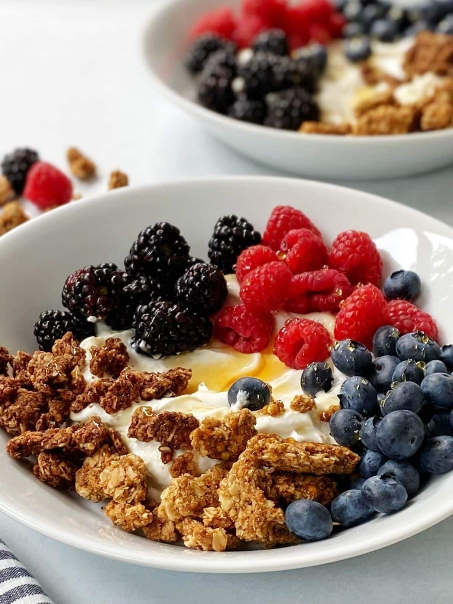

Home
Yogurt

Description
The Greek Yogurt with Granola, Berries, and Honey is a fresh, healthy bowl that combines thick, creamy yogurt with crunchy granola,
sweet berries, and a light drizzle of honey. It is well known for being quick to put together, refreshing, and packed with flavor.
Whether you want a light breakfast or a quick snack, it is a great go-to option any time of day.
Ingredients
- Greek yogurt. One cup of plain or vanilla Greek yogurt.
- Granola. About half a cup of your favorite crunchy granola.
- Fresh berries. A handful of mixed berries, like strawberries, blueberries, or raspberries.
- Honey. One to two teaspoons of honey for drizzling on top.
- Extra toppings (optional). A pinch of chia seeds, sliced almonds, or a few mint leaves.
Steps
- Add the yogurt. Spoon the Greek yogurt into a bowl and smooth out the top with the back of your spoon.
- Prep the berries. Rinse the berries well and slice any large ones, like strawberries, into bite-sized pieces.
- Layer the toppings. Arrange the fresh berries and crunchy granola over the yogurt so you get a bit of everything in each bite.
- Drizzle and serve. Finish with a drizzle of honey on top and enjoy right away while the granola is still crisp.
See also